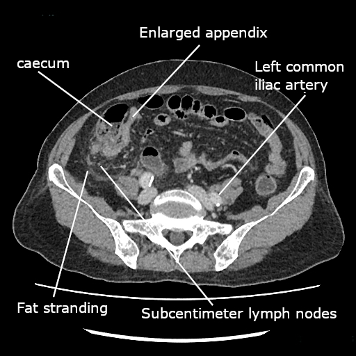

1. Définition et sémantique
Ce que couvre la mise à jour de Jérusalem
Le diagnostic constitue le premier thème, car la probabilité se stratifie avant l'imageriewses_app_2020-30.
Le traitement non opératoire de la forme non compliquée constitue ensuite le deuxième thèmewses_app_2020-30.
Le délai avant appendicectomie et le retard hospitalier constituent ensuite le troisième thèmewses_app_2020-30.
La chirurgie, le grade peropératoire, le phlegmon et l'antibiotique ferment enfin la liste des thèmeswses_app_2020-30.
Le piège est de traiter la mise à jour comme un simple rappel, car le conseil de la WSES l'a convoquéewses_app_2020-38.
2. Épidémiologie (Suisse, puis Europe)
| Indicateur | Valeur lue | Population | Source |
|---|---|---|---|
| Passages aux urgences pour douleur abdominale | 7 à 10 % | urgences | WSES, 2020 |
| Incidence dans les pays développés | 5,7 à 50 pour 100,000 par an | habitants | WSES, 2020 |
| Risque au cours de la vie | 9 % États-Unis, 8 % Europe, 2 % Afrique | population générale | WSES, 2020 |
| Perforation | 16 à 40 %, jusqu'à 55 à 70 % après 50 ans | appendicites | WSES, 2020 |
| Place dans la liste de Sinz | 6,7 à 28,1 % | causes gastro-intestinales citées | Sinz, 2021 |
Pourquoi les pourcentages ne se fusionnent pas
L'incidence de 5,7 à 50 pour 100,000 est celle des pays développés, donc elle n'est pas un taux suisse séparéwses_app_2020-31.
Le risque de 8 % en Europe est un risque au cours de la vie, ce qui n'est pas une incidence annuellewses_app_2020-32.
Sinz indique une fourchette de 6,7 à 28,1 % parmi des causes d'abdomen aigu, donc le dénominateur diffèresinz_fms_2021-5.
La mortalité de 5 % concerne la forme perforée, alors qu'elle ne s'applique pas à la forme non gangréneusewses_app_2020-33.
Le piège est d'additionner 11,1 % et 8,7 %, car ce sont deux voies chirurgicales et non un même groupewses_app_2020-36.
3. Physiopathologie
| Perturbation | Ce qui la montre | Ce qui la corrige |
|---|---|---|
| Appendice inflammé, grade 1 | Score élevé et imagerie, ou vue opératoire | Appendicectomie cœlioscopique dans les 24 heures, ou traitement non opératoire sélectionné |
| Nécrose, grade 2 | Grade opératoire | Chirurgie, car la nécrose sort de la forme simplement inflammée |
| Perforation, abcès ou péritonite purulente | Imagerie ou constat opératoire | Contrôle du foyer et antibiotique postopératoire |
| Péritonite diffuse, grade 4 | Grade 4 | Contrôle du foyer, sans traitement non opératoire |
Obstruction et perforation
L'obstruction n'entraîne pas forcément la perforation, car le texte décrit aussi une résolutionwses_app_2020-33.
La mortalité non gangréneuse reste sous 0,1 %, donc la perforation change l'ordre de grandeurwses_app_2020-33.
La mortalité gangréneuse atteint 0,6 %, alors que la forme perforée avoisine 5 %wses_app_2020-33.
Un coprolithe dans une pièce histologiquement normale a en effet été discuté sur 203 appendicectomieswses_app_2020-279.
Le piège est de promettre que toute appendicite perforera, car le texte dit le contrairewses_app_2020-33.
4. Démarche diagnostique
| Situation | Élément qui tranche | Piège | Conduite si le résultat est positif |
|---|---|---|---|
| Bas risque selon AIR ou AAS | Le score exclut sans confirmer | Utiliser Alvarado pour affirmer chez l'adulte | L'imagerie n'est pas le premier geste |
| Risque intermédiaire | Imagerie systématique et rapide | Rester sur la clinique | Échographie, puis scanner à faible dose si besoin |
| Haut risque avant 40 ans, scores hauts | AIR 9 à 12, Alvarado 9 à 10, AAS au moins 16 | Imposer un scanner à tous | Une cœlioscopie diagnostique peut précéder le scanner |
| Perforation, abcès ou péritonite | Imagerie ou grade opératoire | Proposer un traitement non opératoire | Contrôle du foyer et antibiotique |
Scores : exclure n'est pas confirmer
Alvarado, AIR et le score adulte identifient le bas risque et diminuent ainsi l'appendicectomie blanchewses_app_2020-62.
AIR et AAS réduisent ainsi les admissions et les imageries dans les groupes bas et intermédiaireswses_app_2020-65.
La recommandation contre Alvarado comme confirmation chez l'adulte est ainsi de force faible à modéréewses_app_2020-64.
Chez l'enfant, le score seul ne pose pas le diagnostic, c'est pourquoi la recommandation 1.5 est faible, de classe 2Cwses_app_2020-66.
Le piège d'examen est donc d'hospitaliser ou d'opérer sur un Alvarado intermédiaire sans imageriewses_app_2020-63.
5. Anamnèse ciblée et drapeaux rouges
| Drapeau | Signification | Action |
|---|---|---|
| Grossesse | Le diagnostic clinique seul est insuffisant | Biologie, échographie, puis IRM si l'échographie ne tranche pas |
| Coprolithe | Le traitement non opératoire n'est pas la sélection retenue | Discuter la chirurgie |
| Âge supérieur à 50 ans | Perforation plus fréquente, de 55 à 70 % | Ne pas différer l'imagerie au motif d'un tableau incomplet |
| Douleur persistante et bilan initial normal | La recommandation 1.12 est forte | Imagerie en coupe, puis cœlioscopie si la douleur progresse |
Grossesse : ce que le récit ne suffit pas à dire
Symptômes et signes seuls ne font pas le diagnostic pendant la grossesse, donc la biologie s'ajoutewses_app_2020-63.
L'échographie par compression graduelle est ainsi l'imagerie initiale suggérée, avec une preuve très faiblewses_app_2020-76.
L'IRM vient ensuite si l'échographie ne conclut pas, et une IRM négative n'exclut pas l'appendicitewses_app_2020-76.
Le traitement non opératoire est donc déconseillé pendant la grossesse jusqu'à de nouvelles preuves solideswses_app_2020-80.
Le piège est de rassurer parce que l'IRM est normale, car la suspicion haute maintient l'indication opératoirewses_app_2020-76.
6. Examen physique ciblé, région par région
Échographie au lit du patient
POCUS désigne l'échographie réalisée au lit, et le texte la juge fiable si l'opérateur est expérimentéwses_app_2020-72.
Elle est proposée comme premier outil chez l'adulte et chez l'enfant lorsque l'imagerie est indiquéewses_app_2020-73.
La recommandation correspondante est donc forte, avec une qualité de preuve modérée, de classe 1Bwses_app_2020-73.
Chez l'enfant, elle diminue le recours au scanner si un algorithme par étapes est suiviwses_app_2020-77.
Le piège est donc de conclure que l'examen clinique chiffré remplace cette échographiewses_app_2020-34.
7. Approche syndromique
7.1 Forme non compliquée
7.2 Forme compliquée
7.3 Grades opératoires
7.4 Phlegmon et abcès
7.5 Grossesse
7.6 Enfant
7.7 Douleur persistante à bilan normal
| Syndrome | Signes fonctionnels | Signes physiques ou grade |
|---|---|---|
| 7.1 Non compliquée | Douleur de fosse iliaque, sans critère de complication | Grade 1, appendice inflammé, sans coprolithe si un traitement non opératoire est discuté |
| 7.2 Compliquée | Aggravation, défense plus étendue | Perforation, abcès ou péritonite purulente |
| 7.3 Nécrose | Tableau appendiculaire qui se dégrade | Grade 2 |
| 7.4 Phlegmon ou abcès | Fièvre et douleur localisée persistante | Collection ou empâtement, thème propre du texte |
| 7.5 Péritonite diffuse | Douleur généralisée | Grade 4 |
| 7.6 Grossesse | Douleur dont la clinique seule ne tranche pas | Échographie puis IRM |
| 7.7 Enfant de 1 à 16 ans | Douleur et biologie inflammatoire | Échographie d'abord, score non conclusif seul |
Les quatre grades
Le grade 0 est un appendice d'aspect normal, tandis que le grade 1 est un appendice inflamméwses_app_2020-269.
Le grade 2 est la nécrose, tandis que le grade 3 est une tumeur inflammatoirewses_app_2020-269.
Le grade 4 est la péritonite diffuse, ce qui ferme l'échelle et termine la classificationwses_app_2020-269.
La validation a ainsi trouvé 50,4 % de grades 1 et 10,0 % de grades 4wses_app_2020-270.
Le piège est donc de proposer le traitement non opératoire à une forme déjà compliquée, car la sélection ne le retient paswses_app_2020-80.
8. Diagnostic positif et critères
| Critère | Année et force | Ce qu'il permet | Ce qu'il ne permet pas |
|---|---|---|---|
| Alvarado inférieur à 5 | WSES 2020, sensibilité 99 % pour exclure | Réduire le séjour et l'irradiation | Confirmer l'appendicite de l'adulte |
| AIR et AAS | Recommandation 1.4, preuve haute, forte, 1A | Prédire et diminuer l'appendicectomie blanche | Remplacer l'imagerie du risque intermédiaire |
| AIR 9 à 12, Alvarado 9 à 10, AAS au moins 16, âge inférieur à 40 ans | Recommandation 1.9, faible, 2B | Envisager la cœlioscopie sans scanner | L'imposer après 40 ans |
| Grade WSES | Suggestion 5.2, preuve modérée, faible, 2B | Grouper les patients pour la suite opératoire | Remplacer l'histologie dans tous les débats |
Alvarado inférieur à 5
La spécificité d'Alvarado ne suffit pas à diagnostiquer, cependant un score sous 5 exclut avec une sensibilité de 99 %wses_app_2020-117.
Ce seuil peut ainsi raccourcir le séjour aux urgences et diminuer l'irradiation des patients à bas risquewses_app_2020-117.
Un homme avec un score de 9 ou plus était ainsi positif à 100 % dans la cohorte citéewses_app_2020-117.
Une femme avec un score de 10 était ainsi positive à 100 % dans la même cohortewses_app_2020-117.
Le piège est donc de transformer ces 100 % rétrospectifs en règle pour opérer sans imagerie après 40 answses_app_2020-117wses_app_2020-72.
9. Examens complémentaires
9.a Gold standard
9.b Première intention
9.c Alternatives
9.d Deuxième intention
| Résultat | Signification | Conduite |
|---|---|---|
| Score inférieur au seuil d'exclusion | Appendicite peu probable | Ne pas enchaîner un scanner pour confirmer |
| Échographie non conclusive | Le premier outil n'a pas tranché | Scanner à faible dose chez l'adolescent et le jeune adulte, ou IRM chez l'enfant et la femme enceinte |
| Scanner positif d'une forme compliquée | Perforation, abcès ou péritonite à prendre en charge | Contrôle du foyer, pas de traitement non opératoire |
| IRM négative pendant la grossesse | L'appendicite n'est pas exclue | Maintenir la discussion opératoire si la suspicion reste haute |

Scanner à faible dose
La faible dose avec injection reste non inférieure à la dose standard pour diagnostiquer et séparer la forme compliquéewses_app_2020-73.
Elle réduit l'irradiation, ce qui justifie la préférence écrite dans l'énoncé 1.12wses_app_2020-73.
La recommandation 1.11 vise l'adolescent et le jeune adulte après une échographie négative, et elle est de classe 1Awses_app_2020-74.
Avant 40 ans, avec des scores très hauts, le scanner peut être sauté au profit de la cœlioscopie, suggestion faiblewses_app_2020-72.
Le piège est de répéter un scanner standard après une faible dose déjà conclusivewses_app_2020-73.
Lecture de la coupe
On regarde d'abord les mentions déjà imprimées, car elles nomment l'appendice, le caecum et la graissewses_app_2020-269.
Le mot subcentimeter est celui de l'auteur pour les ganglions, donc aucun millimètre n'est inventéwses_app_2020-269.
L'artère iliaque commune gauche est une légende d'orientation, et elle n'est pas le diagnosticwses_app_2020-269.
Le grade 1 reste un appendice inflammé, ce que l'image suggère sans le prouver à elle seulewses_app_2020-269.
Le piège est de conclure à une perforation parce que la graisse est infiltrée, car l'image ne date pas la perforationwses_app_2020-33.
10. Arbre décisionnel
| Si | Alors |
|---|---|
| Perforation, abcès ou péritonite purulente | Le foyer se contrôle et l'antibiotique postopératoire est indiqué |
| Coprolithe | Le traitement non opératoire n'est pas retenu |
| Grossesse | Pas de traitement non opératoire ; échographie puis IRM |
| Score bas | L'appendicite s'exclut sans scanner de confirmation |
| Risque intermédiaire | Imagerie systématique |
| Moins de 40 ans et scores très hauts | La cœlioscopie peut précéder le scanner |
| Forme non compliquée sans coprolithe | Cœlioscopie sur la prochaine liste, dans les 24 heures |
| Douleur qui progresse après imagerie négative | Cœlioscopie exploratrice |
Les 24 heures
La recommandation 3.1 indique la cœlioscopie sur la prochaine liste, dans les 24 heures, pour la forme non compliquéewses_app_2020-85.
La qualité de preuve est modérée et la force est forte, de classe 1Bwses_app_2020-85.
Un délai jusqu'à 24 heures après l'admission reste sans rôle propre de facteur de complicationwses_app_2020-85.
Après ce délai, les issues défavorables augmentent, donc le report au lendemain suivant n'est pas neutrewses_app_2020-85.
Le piège est de confondre ce délai hospitalier avec la durée des symptômes avant l'arrivéewses_app_2020-85.
11. Prise en charge selon les recommandations suisses
11.A But
11.B Moyens
11.C Surveillance
11.D Pronostic et sortie
| Spécialité | Dose lue | Voie et durée | Limite lue | Extrait |
|---|---|---|---|---|
| Dafalgan, paracétamol, n° 47503aips-47503-2 | Plafond adulte 4000 mg par jour ; de 9 à 12 ans, 2000 mg ; dès 40 kg, 500 à 1000 mg par priseaips-47503-2aips-47503-3 | Orale, écart de 4 à 8 heuresaips-47503-3 | Douleur faible à modérée, pas le traitement d'une appendicite compliquée | aips-47503 |
| Dafalgan intraveineux, n° 66702aips-66702-2 | Au-dessus de 50 kg : 1 g jusqu'à 4 fois, maximum 4 g ; de 33 à 50 kg : 15 mg par kg, maximum 60 mg par kgaips-66702-2 | Perfusion de 15 minutes, écart minimal de 4 heures, durée maximale de 2 joursaips-66702-2 | Clairance inférieure à 10 ml par minute : ne pas utiliser | aips-66702 |
| Algifor Liquid Caps 400, n° 65372aips-65372-2 | Plafond d'automédication 1200 mg par jouraips-65372-2 | Au plus 3 joursaips-65372-2 | Pas d'indication lue pour l'appendicite ; ulcère et troisième trimestre contre-indiqués | aips-65372 |
Urgence — conduite chronologique
Dès que la forme compliquée est reconnue, l'antibiotique à spectre digestif commence, sans attendre la fin du bilan de confortwses_app_2020-310.
De 0 à 60 minutes avant l'incision, une dose unique à large spectre est recommandée, quelle que soit l'inflammationwses_app_2020-110.
Si la forme est non compliquée, cette dose préopératoire ne se prolonge pas après l'opérationwses_app_2020-110.
La cœlioscopie de la forme non compliquée reste prévue sur la prochaine liste, dans les 24 heureswses_app_2020-85.
Si le foyer compliqué est contrôlé, la durée usuelle reste de 3 à 5 jours, et l'essai cité compare environ 4 jours à environ 8 jourswses_app_2020-307.
Le piège est d'ajouter des jours d'antibiotique à une forme non compliquée déjà opéréewses_app_2020-110.
Paracétamol lu pour cette leçon
L'indication orale est la douleur faible à modérée et la fièvre, donc l'appendicite compliquée dépasse ce cadreaips-47503-2.
Le plafond est de 4000 mg par jour chez l'adulte et de 2000 mg entre 9 et 12 ansaips-47503-2.
Dès 40 kg, la prise orale va de 500 à 1000 mg, et le maximum lu est de 4 gaips-47503-3.
Au-dessus de 50 kg, la perfusion est de 1 g jusqu'à 4 fois par jour, sans dépasser 4 gaips-66702-2.
De 33 à 50 kg, la perfusion est de 15 mg par kg, avec un plafond de 60 mg par kg en 24 heuresaips-66702-2.
Le déficit en glucose-6-phosphate déshydrogénase contre-indique la forme intraveineuse, car une anémie hémolytique est possibleaips-66702-2.
Ibuprofène d'automédication
Algifor Liquid Caps 400 vise des douleurs articulaires, dorsales, dentaires ou menstruelles, et la fièvre grippaleaips-65372-2.
L'appendicite n'est pas dans cette liste, donc l'indication ne se déduit pas du symptôme abdominalaips-65372-2.
Le plafond lu est de 1200 mg par jour pendant 3 jours au plusaips-65372-2.
L'ulcère, l'hémorragie digestive et la maladie inflammatoire intestinale contre-indiquent cet ibuprofène, car le texte les listeaips-65372-2.
Le troisième trimestre contre-indique aussi la molécule, ce qui croise la grossesse déjà hors traitement non opératoireaips-65372-2.
Traitement non opératoire
Il se discute pour une forme non compliquée sans coprolithe, et la recommandation est forte, de classe 1Awses_app_2020-80.
La récidive peut atteindre 39 % à 5 ans, ce qui se dit avant le choixwses_app_2020-79.
Les complications globales à 5 ans sont moindres qu'avec la chirurgie dans les méta-analyses citées, et l'arrêt de travail est plus courtwses_app_2020-79.
L'échec et une forme compliquée méconnue font partie de l'avertissement obligatoire avant le choixwses_app_2020-80.
Pendant la grossesse, cette voie est déconseillée, avec une preuve très faible et une suggestion faiblewses_app_2020-80.
12. Prévention
13. Points clés
14. Pièges et questions fréquentes à l'examen fédéral suisse
| Question | Réponse | Raison |
|---|---|---|
| Alvarado confirme-t-il l'adulte ? | Non, il ne confirme pas l'adulte. | Il sert à exclure sous le seuil de 5, avec une sensibilité de 99 %. |
| Antibiotique après une forme simple opérée ? | Non, il ne se poursuit pas. | Une seule dose reste indiquée, de 0 à 60 minutes avant l'incision. |
| Plafond oral de paracétamol chez l'adulte ? | Le plafond lu est de 4000 mg par jouraips-47503-2. | Le chiffre est repris tel quel, sans arrondi. |
| Traitement non opératoire si coprolithe ? | Non, cette voie est écartée. | La recommandation 2.1.1 exige l'absence de coprolithe, et annonce jusqu'à 39 % de récidive à 5 ans. |
Sources
- [wses_app_2020-30] Grokbot/LOT_052/_travail/evidence/wses_app_2020.txt — https://pmc.ncbi.nlm.nih.gov/articles/PMC7386163/ (consulté le 2026-11-10)
- [wses_app_2020-31] Grokbot/LOT_052/_travail/evidence/wses_app_2020.txt — https://pmc.ncbi.nlm.nih.gov/articles/PMC7386163/ (consulté le 2026-11-10)
- [wses_app_2020-269] Grokbot/LOT_052/_travail/evidence/wses_app_2020.txt — https://pmc.ncbi.nlm.nih.gov/articles/PMC7386163/ (consulté le 2026-11-10)
- [wses_app_2020-267] Grokbot/LOT_052/_travail/evidence/wses_app_2020.txt — https://pmc.ncbi.nlm.nih.gov/articles/PMC7386163/ (consulté le 2026-11-10)
- [wses_app_2020-60] Grokbot/LOT_052/_travail/evidence/wses_app_2020.txt — https://pmc.ncbi.nlm.nih.gov/articles/PMC7386163/ (consulté le 2026-11-10)
- [wses_app_2020-38] Grokbot/LOT_052/_travail/evidence/wses_app_2020.txt — https://pmc.ncbi.nlm.nih.gov/articles/PMC7386163/ (consulté le 2026-11-10)
- [wses_app_2020-32] Grokbot/LOT_052/_travail/evidence/wses_app_2020.txt — https://pmc.ncbi.nlm.nih.gov/articles/PMC7386163/ (consulté le 2026-11-10)
- [wses_app_2020-33] Grokbot/LOT_052/_travail/evidence/wses_app_2020.txt — https://pmc.ncbi.nlm.nih.gov/articles/PMC7386163/ (consulté le 2026-11-10)
- [sinz_fms_2021-5] Grokbot/LOT_052/_travail/evidence/sinz_fms_2021.txt — https://doi.org/10.4414/fms.2021.08848 (consulté le 2026-11-10)
- [wses_app_2020-36] Grokbot/LOT_052/_travail/evidence/wses_app_2020.txt — https://pmc.ncbi.nlm.nih.gov/articles/PMC7386163/ (consulté le 2026-11-10)
- [wses_app_2020-270] Grokbot/LOT_052/_travail/evidence/wses_app_2020.txt — https://pmc.ncbi.nlm.nih.gov/articles/PMC7386163/ (consulté le 2026-11-10)
- [wses_app_2020-40] Grokbot/LOT_052/_travail/evidence/wses_app_2020.txt — https://pmc.ncbi.nlm.nih.gov/articles/PMC7386163/ (consulté le 2026-11-10)
- [wses_app_2020-279] Grokbot/LOT_052/_travail/evidence/wses_app_2020.txt — https://pmc.ncbi.nlm.nih.gov/articles/PMC7386163/ (consulté le 2026-11-10)
- [wses_app_2020-310] Grokbot/LOT_052/_travail/evidence/wses_app_2020.txt — https://pmc.ncbi.nlm.nih.gov/articles/PMC7386163/ (consulté le 2026-11-10)
- [wses_app_2020-61] Grokbot/LOT_052/_travail/evidence/wses_app_2020.txt — https://pmc.ncbi.nlm.nih.gov/articles/PMC7386163/ (consulté le 2026-11-10)
- [wses_app_2020-62] Grokbot/LOT_052/_travail/evidence/wses_app_2020.txt — https://pmc.ncbi.nlm.nih.gov/articles/PMC7386163/ (consulté le 2026-11-10)
- [wses_app_2020-63] Grokbot/LOT_052/_travail/evidence/wses_app_2020.txt — https://pmc.ncbi.nlm.nih.gov/articles/PMC7386163/ (consulté le 2026-11-10)
- [wses_app_2020-64] Grokbot/LOT_052/_travail/evidence/wses_app_2020.txt — https://pmc.ncbi.nlm.nih.gov/articles/PMC7386163/ (consulté le 2026-11-10)
- [wses_app_2020-65] Grokbot/LOT_052/_travail/evidence/wses_app_2020.txt — https://pmc.ncbi.nlm.nih.gov/articles/PMC7386163/ (consulté le 2026-11-10)
- [wses_app_2020-66] Grokbot/LOT_052/_travail/evidence/wses_app_2020.txt — https://pmc.ncbi.nlm.nih.gov/articles/PMC7386163/ (consulté le 2026-11-10)
- [wses_app_2020-80] Grokbot/LOT_052/_travail/evidence/wses_app_2020.txt — https://pmc.ncbi.nlm.nih.gov/articles/PMC7386163/ (consulté le 2026-11-10)
- [wses_app_2020-72] Grokbot/LOT_052/_travail/evidence/wses_app_2020.txt — https://pmc.ncbi.nlm.nih.gov/articles/PMC7386163/ (consulté le 2026-11-10)
- [wses_app_2020-75] Grokbot/LOT_052/_travail/evidence/wses_app_2020.txt — https://pmc.ncbi.nlm.nih.gov/articles/PMC7386163/ (consulté le 2026-11-10)
- [wses_app_2020-85] Grokbot/LOT_052/_travail/evidence/wses_app_2020.txt — https://pmc.ncbi.nlm.nih.gov/articles/PMC7386163/ (consulté le 2026-11-10)
- [wses_app_2020-76] Grokbot/LOT_052/_travail/evidence/wses_app_2020.txt — https://pmc.ncbi.nlm.nih.gov/articles/PMC7386163/ (consulté le 2026-11-10)
- [wses_app_2020-34] Grokbot/LOT_052/_travail/evidence/wses_app_2020.txt — https://pmc.ncbi.nlm.nih.gov/articles/PMC7386163/ (consulté le 2026-11-10)
- [wses_app_2020-73] Grokbot/LOT_052/_travail/evidence/wses_app_2020.txt — https://pmc.ncbi.nlm.nih.gov/articles/PMC7386163/ (consulté le 2026-11-10)
- [wses_app_2020-77] Grokbot/LOT_052/_travail/evidence/wses_app_2020.txt — https://pmc.ncbi.nlm.nih.gov/articles/PMC7386163/ (consulté le 2026-11-10)
- [wses_app_2020-67] Grokbot/LOT_052/_travail/evidence/wses_app_2020.txt — https://pmc.ncbi.nlm.nih.gov/articles/PMC7386163/ (consulté le 2026-11-10)
- [wses_app_2020-69] Grokbot/LOT_052/_travail/evidence/wses_app_2020.txt — https://pmc.ncbi.nlm.nih.gov/articles/PMC7386163/ (consulté le 2026-11-10)
- [wses_app_2020-79] Grokbot/LOT_052/_travail/evidence/wses_app_2020.txt — https://pmc.ncbi.nlm.nih.gov/articles/PMC7386163/ (consulté le 2026-11-10)
- [wses_app_2020-117] Grokbot/LOT_052/_travail/evidence/wses_app_2020.txt — https://pmc.ncbi.nlm.nih.gov/articles/PMC7386163/ (consulté le 2026-11-10)
- [wses_app_2020-119] Grokbot/LOT_052/_travail/evidence/wses_app_2020.txt — https://pmc.ncbi.nlm.nih.gov/articles/PMC7386163/ (consulté le 2026-11-10)
- [wses_app_2020-276] Grokbot/LOT_052/_travail/evidence/wses_app_2020.txt — https://pmc.ncbi.nlm.nih.gov/articles/PMC7386163/ (consulté le 2026-11-10)
- [wses_app_2020-70] Grokbot/LOT_052/_travail/evidence/wses_app_2020.txt — https://pmc.ncbi.nlm.nih.gov/articles/PMC7386163/ (consulté le 2026-11-10)
- [wses_app_2020-68] Grokbot/LOT_052/_travail/evidence/wses_app_2020.txt — https://pmc.ncbi.nlm.nih.gov/articles/PMC7386163/ (consulté le 2026-11-10)
- [wses_app_2020-78] Grokbot/LOT_052/_travail/evidence/wses_app_2020.txt — https://pmc.ncbi.nlm.nih.gov/articles/PMC7386163/ (consulté le 2026-11-10)
- [wses_app_2020-74] Grokbot/LOT_052/_travail/evidence/wses_app_2020.txt — https://pmc.ncbi.nlm.nih.gov/articles/PMC7386163/ (consulté le 2026-11-10)
- [wses_app_2020-71] Grokbot/LOT_052/_travail/evidence/wses_app_2020.txt — https://pmc.ncbi.nlm.nih.gov/articles/PMC7386163/ (consulté le 2026-11-10)
- [boerner_2025-64] Grokbot/LOT_052/_travail/evidence/boerner_2025.txt — https://pmc.ncbi.nlm.nih.gov/articles/PMC12452643/ (consulté le 2026-11-10)
- [wses_app_2020-88] Grokbot/LOT_052/_travail/evidence/wses_app_2020.txt — https://pmc.ncbi.nlm.nih.gov/articles/PMC7386163/ (consulté le 2026-11-10)
- [wses_app_2020-111] Grokbot/LOT_052/_travail/evidence/wses_app_2020.txt — https://pmc.ncbi.nlm.nih.gov/articles/PMC7386163/ (consulté le 2026-11-10)
- [wses_app_2020-110] Grokbot/LOT_052/_travail/evidence/wses_app_2020.txt — https://pmc.ncbi.nlm.nih.gov/articles/PMC7386163/ (consulté le 2026-11-10)
- [wses_app_2020-307] Grokbot/LOT_052/_travail/evidence/wses_app_2020.txt — https://pmc.ncbi.nlm.nih.gov/articles/PMC7386163/ (consulté le 2026-11-10)
- [aips-47503-2] AIPS Dafalgan® (paracétamol), autorisation Swissmedic 47503 — https://files.refdata.ch/simis-public-prod/MedicinalDocuments/783cc01c6fa7448399362d9df7d4be78-fr.html (consulté le 2026-11-10)
- [aips-47503-3] AIPS Dafalgan® (paracétamol), autorisation Swissmedic 47503 — https://files.refdata.ch/simis-public-prod/MedicinalDocuments/783cc01c6fa7448399362d9df7d4be78-fr.html (consulté le 2026-11-10)
- [aips-47503-4] AIPS Dafalgan® (paracétamol), autorisation Swissmedic 47503 — https://files.refdata.ch/simis-public-prod/MedicinalDocuments/783cc01c6fa7448399362d9df7d4be78-fr.html (consulté le 2026-11-10)
- [aips-66702-2] AIPS Dafalgan® i.v. 1 g (paracétamol), autorisation Swissmedic 66702 — https://files.refdata.ch/simis-public-prod/MedicinalDocuments/6b3200934e794c7db5635f2f33e12bce-fr.html (consulté le 2026-11-10)
- [aips-65372-2] AIPS Algifor® Liquid Caps 400 (ibuprofène), autorisation Swissmedic 65372 — https://files.refdata.ch/simis-public-prod/MedicinalDocuments/d69ccece179b4540b7d87a96e9127fa8-fr.html (consulté le 2026-11-10)
- [wses_app_2020-35] Grokbot/LOT_052/_travail/evidence/wses_app_2020.txt — https://pmc.ncbi.nlm.nih.gov/articles/PMC7386163/ (consulté le 2026-11-10)
- [wses_app_2020-204] Grokbot/LOT_052/_travail/evidence/wses_app_2020.txt — https://pmc.ncbi.nlm.nih.gov/articles/PMC7386163/ (consulté le 2026-11-10)
Le contenu reprend les sources citées ; il n’a pas été validé cliniquement par un médecin.